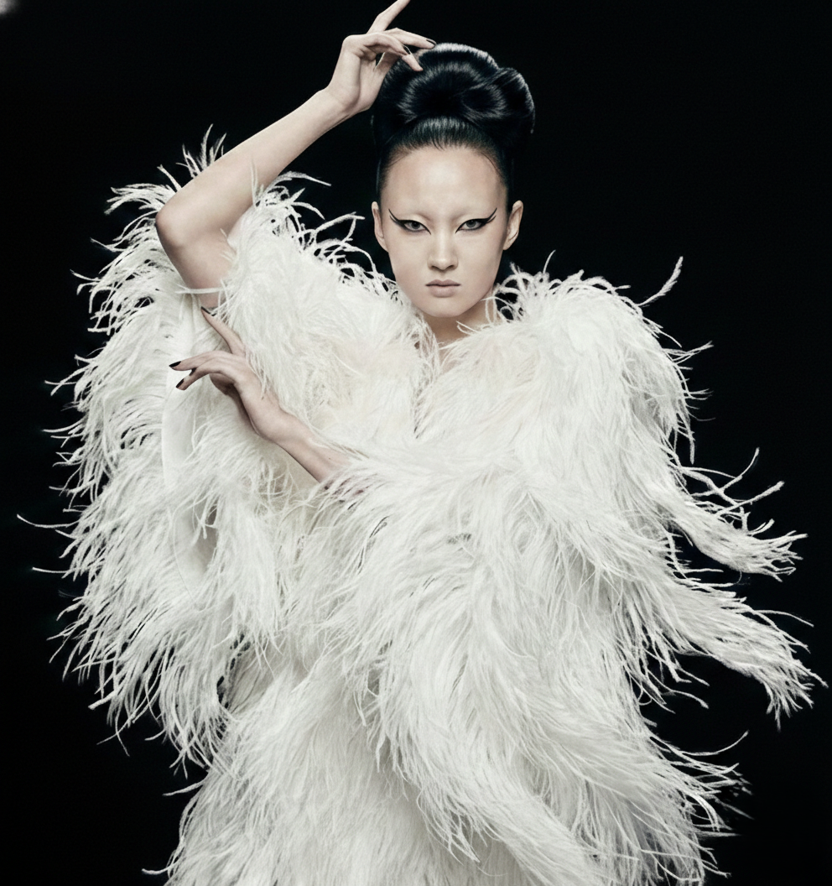

La nueva ola de la vanguardia: cómo los diseñadores emergentes están redefiniendo la moda
Desde siluetas deconstruidas hasta atrevidos experimentos textiles, una nueva generación de diseñadores está ampliando los límites de lo que puede ser la moda...